A rebours (Against the Grain) is a staple of the decadent literary movement.
Written by J.K Huysmans in 1884, it depicts the life of an eccentric, misanthropic nobleman named des Esseintes.
One of the peculiarities of the novel is the fact that it does not follow a classic story structure.
Instead, each chapter is essentially a description of des Esseintes’ s house, his book collection, views on religion, etc.
It is a very interesting and intriguing piece of litterature but I would not call it an easy read,
and that is actually why I am writing about this today.
Instead of going through the book ourselves, let’s distinguish the main theme of each chapter using Natural Language Processing.
First, we need to actually get the book and create our dataset. We could copy paste everything, but should we?
That sounds troublesome. Luckily, we can use Beautiful Soup:
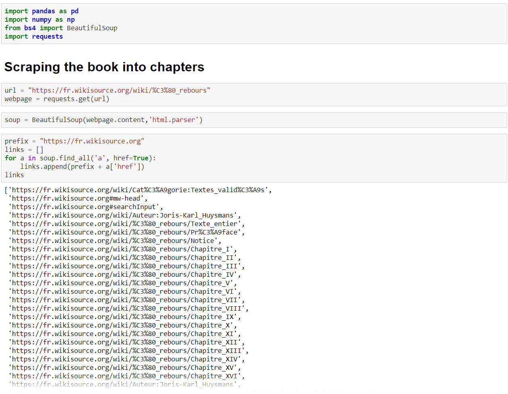
Finding all the links in the wikisource page to quickly create a list containing
the links to the individual chapters.
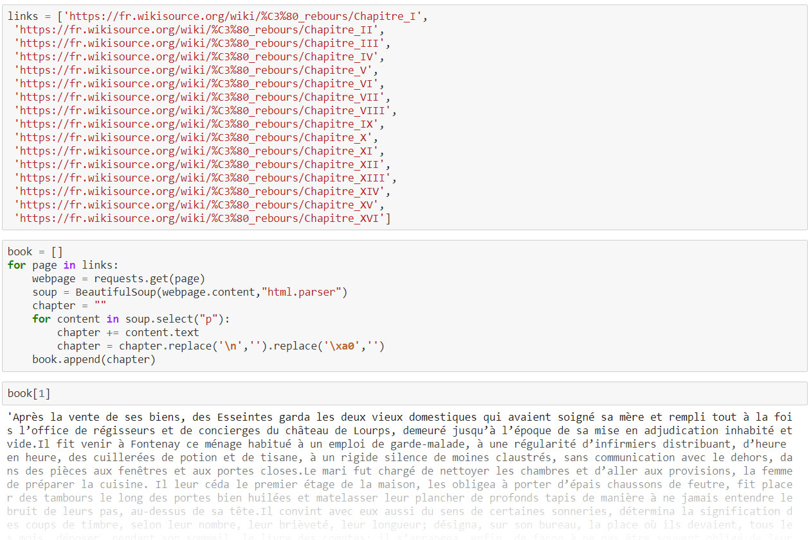
Using a two loops to get the text from each chapter individually
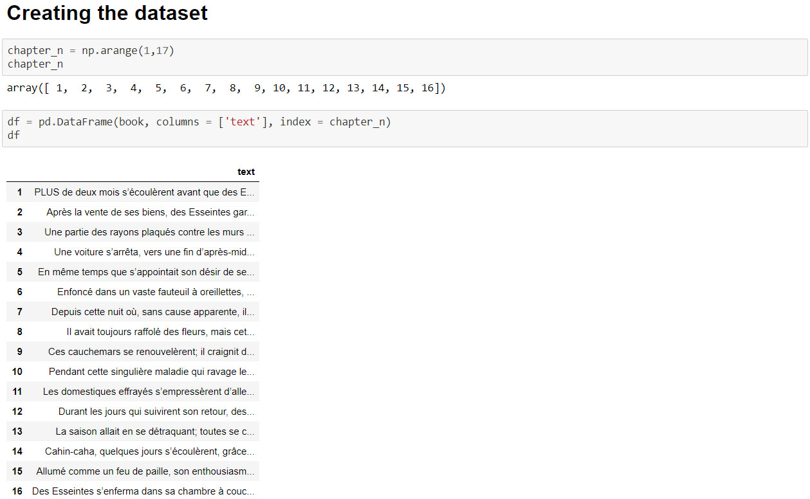
Now that we have everything set, let's start our analysis.
NLP is interesting because it leaves room for much interpretation and adjustment.
Stop words had to be added, the number of themes tweaked, etc. for a while before I was satisfied with the result.
I ended up settling on 10 themes that I thought were the most pertinent throughout the book.
(note: the book and therefore the project are in French, though the principle would be the same in English or any other language):
Traveling
Perfume & Aromas
Music
Inside of home
Flowers
Family
Love
Spirituality & Religion
Poetry & Litterature
Colors & Gems
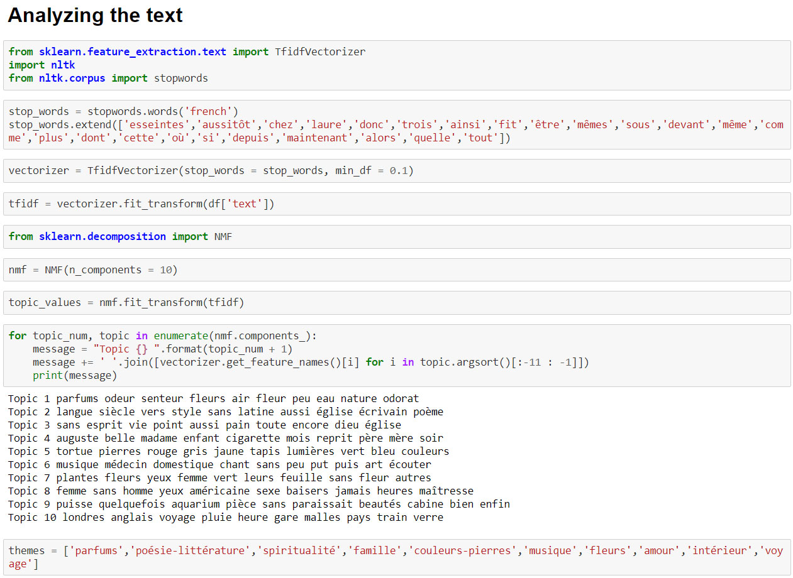
With this, we can create a dataframe containing the "value" of each theme in each chapter
These values, in themselves are meaningless. They are just indicating the importance of
the corresponding theme.
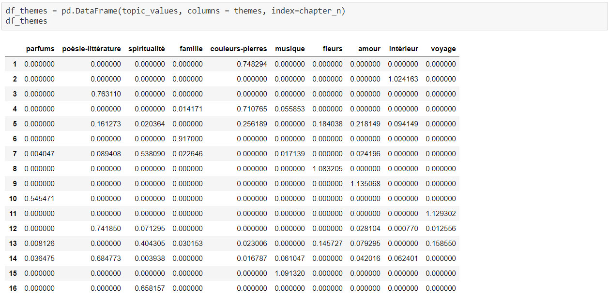
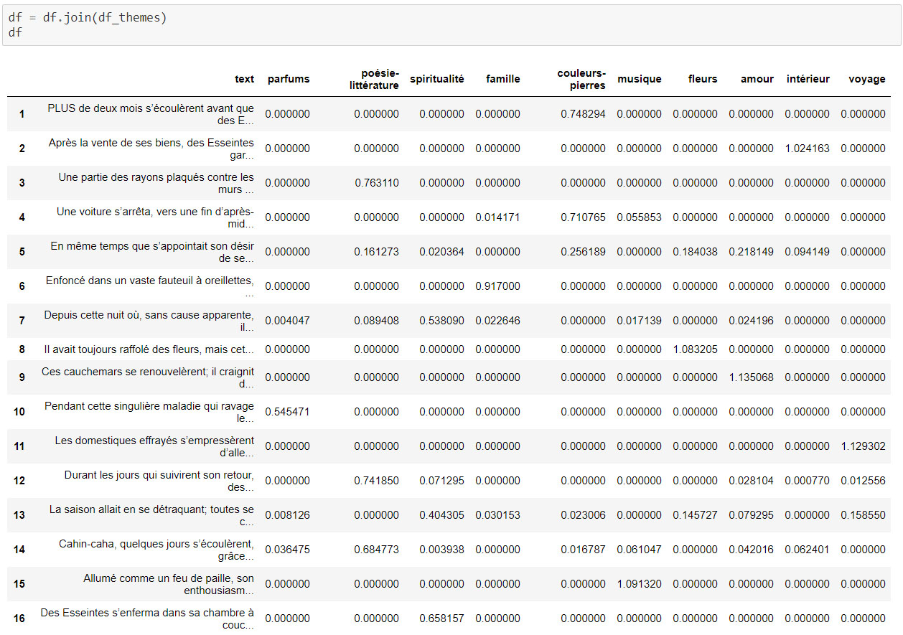
Joining with the original dataframe containing the text
To see the main theme or themes more clearly, let's say that there has to be
a certain minimum value for us to consider that theme a "main one". In this case,
I chose to set this value to 0.2. Anything below will be reset as a 0,
anything over will be 1, essentially becoming a binary "main theme" or
"not a main theme" value.
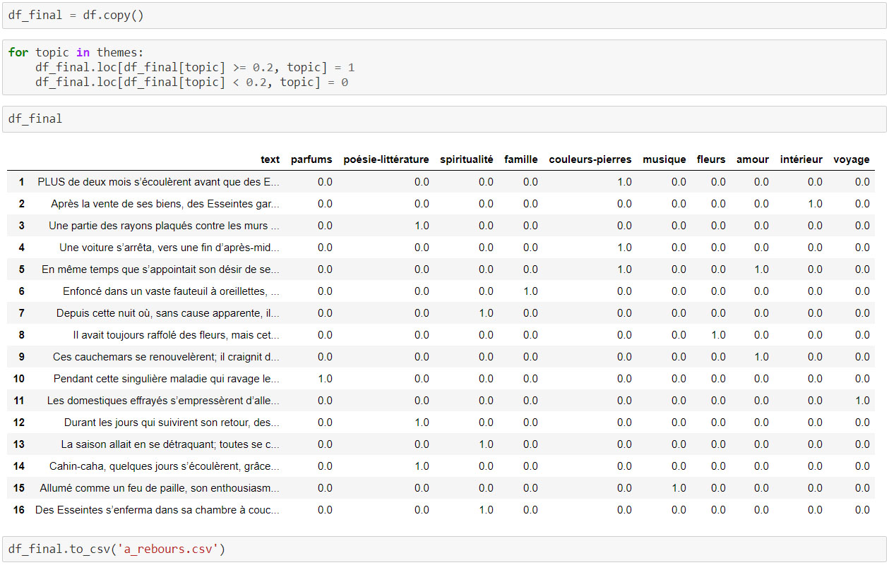
Now, what? We should make it visually appealing and readable.
Of course, we have different ways to do that thanks to
Matplotlib or Seaborn, but let’s change things and switch over to Tableau to do just that.
And here we go. We have a nice visual representation of each theme and where it is referenced.
Before concluding, we can look at two chapters of the book to check if our analysis
and visualization makes sense:
Chapter IV(en) (in which we are expecting to read about colors and gems)
Chapter XI(en) (in which we are expecting to read about travel)
Et voilà! We successfully used Beautiful Soup to get the entire text of a book,
and then NLP to identify the main themes accross!
(still though, do read the book, it is really great)
A rebours (Against the Grain) is a staple of the decadent literary movement. Written by J.K Huysmans in 1884, it depicts the life of an eccentric, misanthropic nobleman named des Esseintes. One of the peculiarities of the novel is the fact that it does not follow a classic story structure. Instead, each chapter is essentially a description of des Esseintes’ s house, his book collection, views on religion, etc. It is a very interesting and intriguing piece of litterature but I would not call it an easy read, and that is actually why I am writing about this today.
Instead of going through the book ourselves, let’s distinguish the main theme of each chapter using Natural Language Processing.
First, we need to actually get the book and create our dataset. We could copy paste everything, but should we? That sounds troublesome. Luckily, we can use Beautiful Soup:
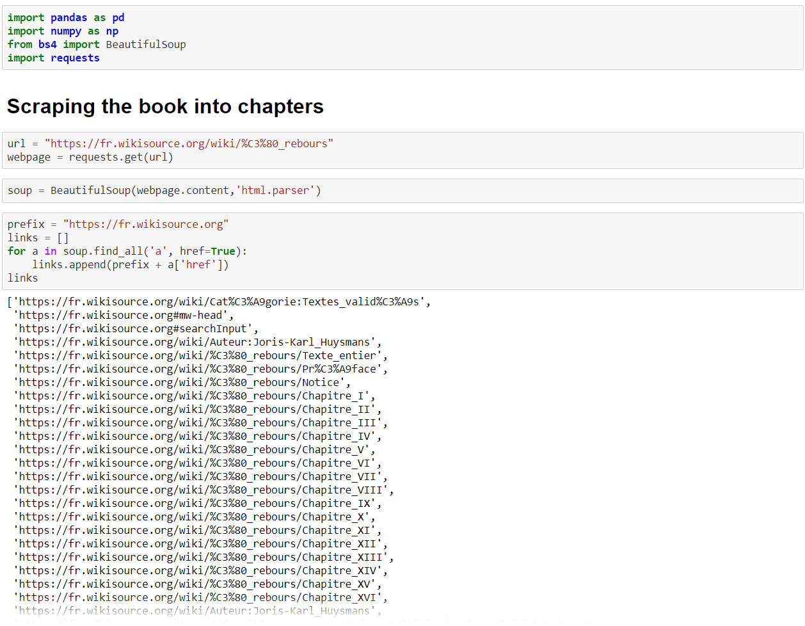Now that we have everything set, let's start our analysis. NLP is interesting because it leaves room for much interpretation and adjustment. Stop words had to be added, the number of themes tweaked, etc. for a while before I was satisfied with the result. I ended up settling on 10 themes that I thought were the most pertinent throughout the book. (note: the book and therefore the project are in French, though the principle would be the same in English or any other language):
- Traveling
- Perfume & Aromas
- Music
- Inside of home
- Flowers
- Family
- Love
- Spirituality & Religion
- Poetry & Litterature
- Colors & Gems
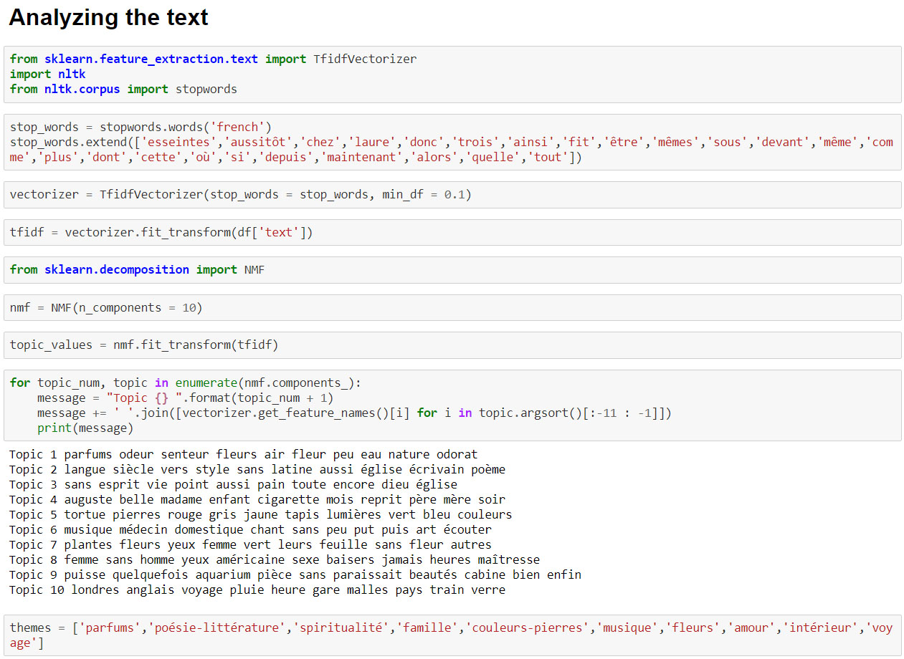With this, we can create a dataframe containing the "value" of each theme in each chapter These values, in themselves are meaningless. They are just indicating the importance of the corresponding theme.
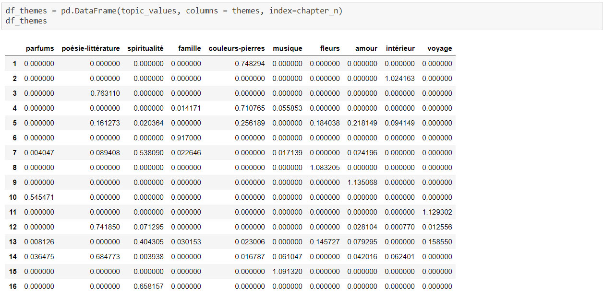 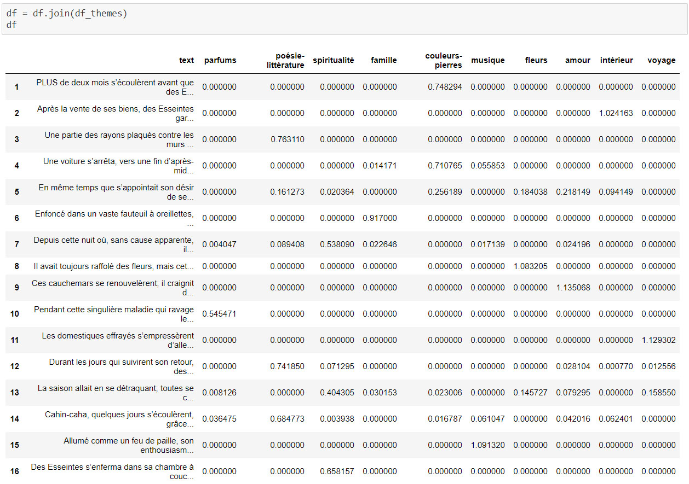To see the main theme or themes more clearly, let's say that there has to be a certain minimum value for us to consider that theme a "main one". In this case, I chose to set this value to 0.2. Anything below will be reset as a 0, anything over will be 1, essentially becoming a binary "main theme" or "not a main theme" value.
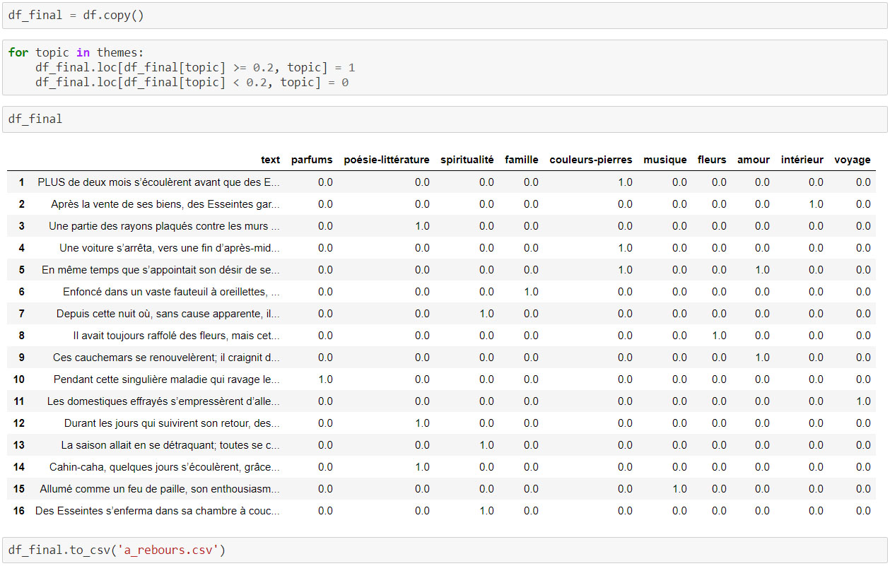Now, what? We should make it visually appealing and readable. Of course, we have different ways to do that thanks to Matplotlib or Seaborn, but let’s change things and switch over to Tableau to do just that.
And here we go. We have a nice visual representation of each theme and where it is referenced.
Before concluding, we can look at two chapters of the book to check if our analysis and visualization makes sense:
Chapter IV(en) (in which we are expecting to read about colors and gems)
Chapter XI(en) (in which we are expecting to read about travel)
Et voilà! We successfully used Beautiful Soup to get the entire text of a book, and then NLP to identify the main themes accross!
(still though, do read the book, it is really great)